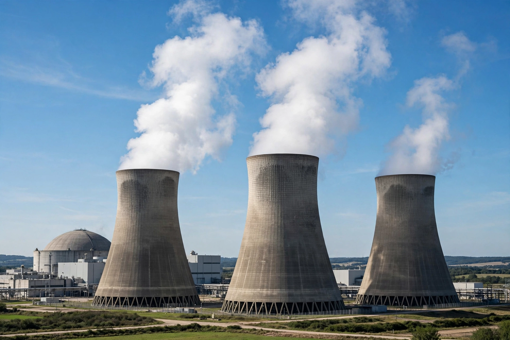

Nuclear reactor
From Wikipedia, the free encyclopedia

[Image: Hyperboloid cooling towers of a nuclear power station releasing steam]Hyperboloid cooling towers of a nuclear power station releasing steam
A nuclear reactor is a device that initiates and controls a self-sustaining nuclear chain reaction, most commonly the fission of uranium-235 or plutonium-239. Reactors are used principally to generate electricity in nuclear power plants, and also for research, naval propulsion and producing medical and industrial isotopes.
A reactor core contains fuel assemblies, a moderator to slow neutrons (water, heavy water or graphite), control rods that absorb neutrons to regulate or halt the reaction, and coolant that carries heat away to raise steam for turbines. Enrico Fermi's Chicago Pile-1 (1942) was the first reactor. Most power reactors today are pressurised water reactors (PWRs); others include boiling water, CANDU heavy-water and (historically, at Chernobyl) graphite-moderated RBMK designs. Safety cases revolve around cooling under all circumstances: loss of coolant caused the accidents at Three Mile Island (1979), Chernobyl (1986, a design-specific steam explosion and fire) and Fukushima (2011).
Components
Fuel is usually uranium dioxide pellets enriched to about 3–5% U-235 for power reactors, sealed in metal cladding. Containment buildings, emergency core-cooling systems and multiple redundant safety systems are standard in modern Western designs. Spent fuel remains highly radioactive and is stored in pools, then dry casks, pending geological disposal.
See also
Nuclear fission · Uranium · Enrico Fermi · Nuclear power · Chernobyl disaster · Chain reaction